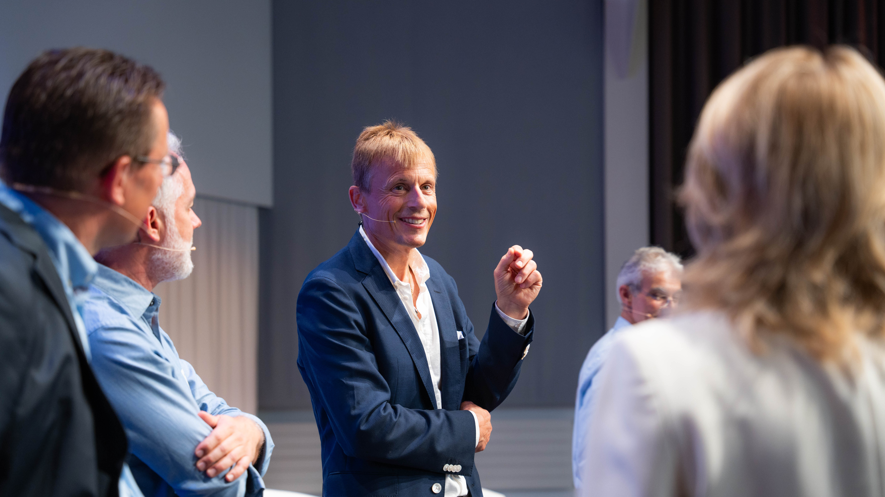
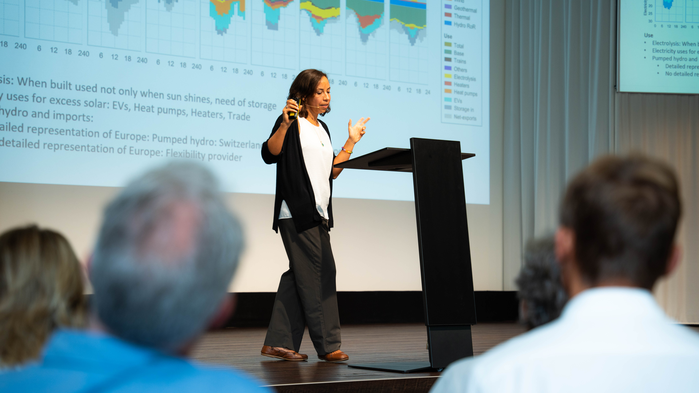
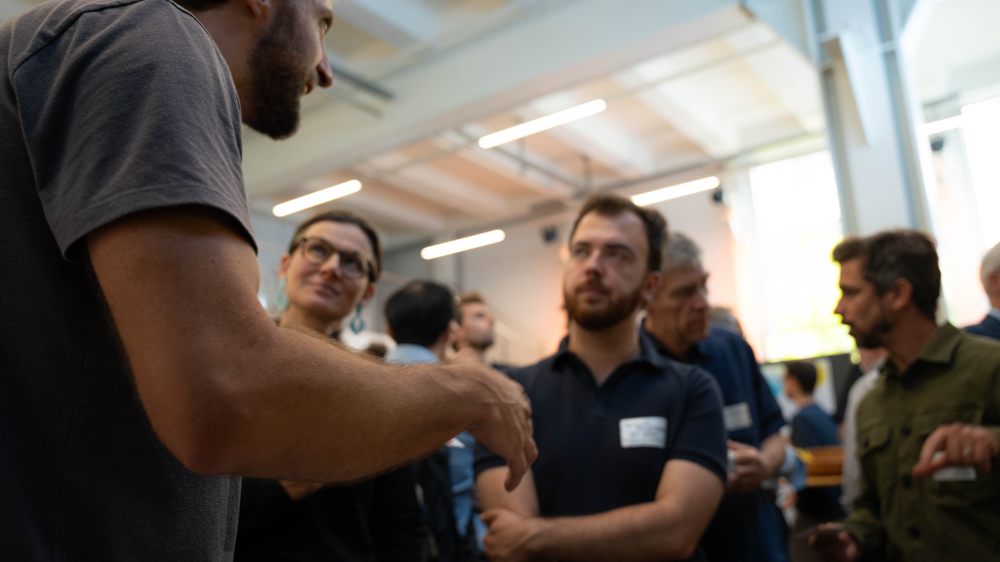
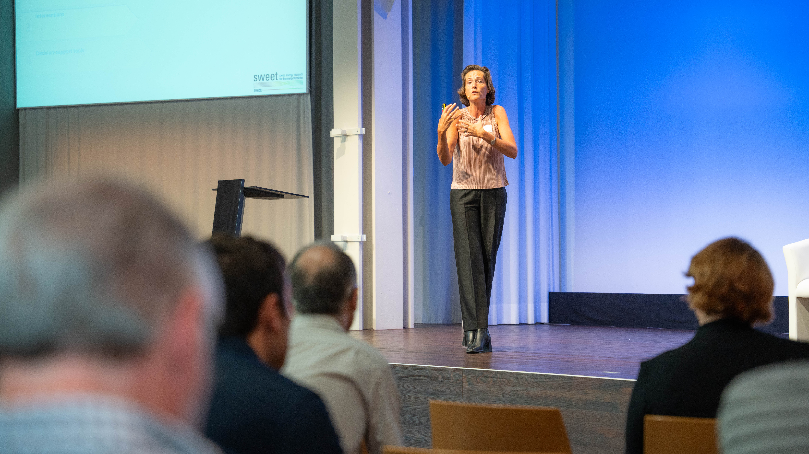
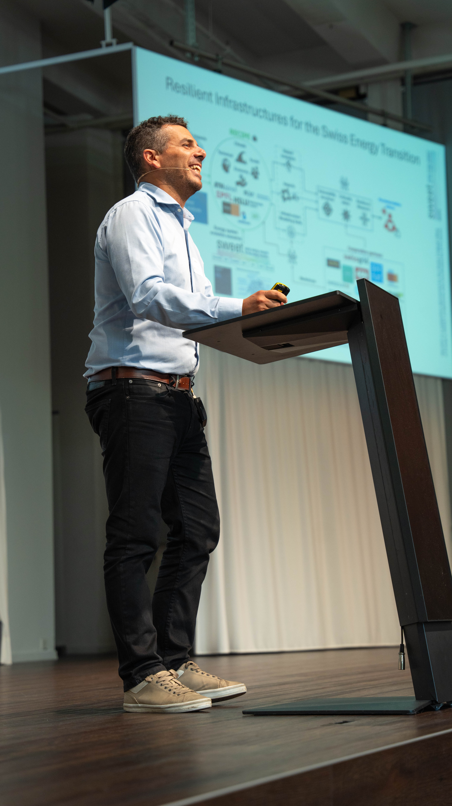
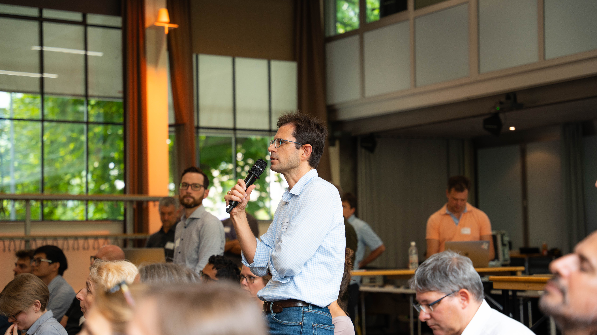

SWEET
Konferenz
2024
Atmosphärische Eventfotografie an der SWEET-Konferenz 2024. Zwischen Bühnenlichtern und spontanen Begegnungen entsteht ein visuelles Dokument — authentisch, lebendig und voller Energie. Jedes Bild erzählt von einem Moment, der so nur einmal existiert. Dokumentarisch im Ansatz, emotional in der Wirkung.






